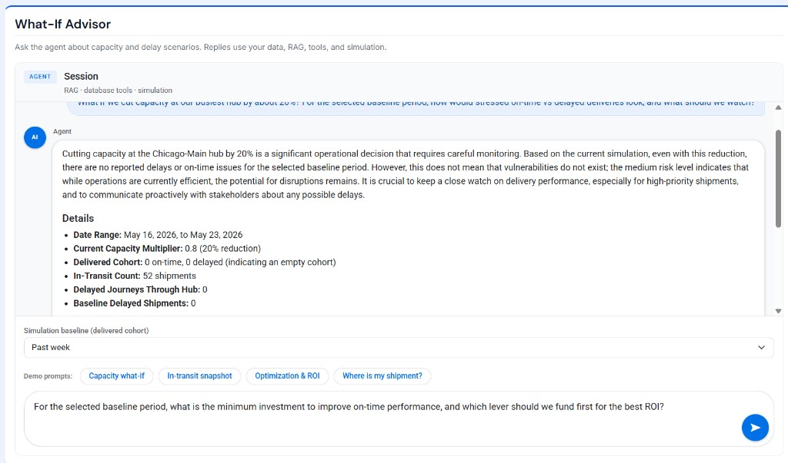
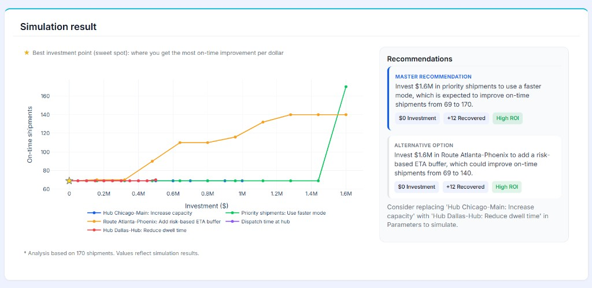

SupplyMind AI
Supply Chain Optimizer
A smart dashboard for supply chain managers: monitor in-transit shipments, predict delays, escalate critical cases, and map problem hubs. Built-in analytical tools run historical optimization and investment simulations; an AI agent selects which tools to invoke from your questions and explains the results in plain language.
BriefSystems engineering demonstration
Integrates live operational data, simulation-based trade studies, and AI-driven simulation selection to answer system performance and operational tradeoffs.
Demo & Visuals
The live app combines delivery KPIs, a hub prediction map, a What-If Advisor agent, escalated shipments, and supply chain optimization with parameter simulation.


Problem Statement
Supply chain managers need to see delivery health at a glance, but delay signals are scattered across shipments, hubs, risks, and schedules. When problems surface late, escalation and rerouting become reactive instead of planned.
Historical delivered data holds patterns—congested hubs, dwell time, transit mode, dispatch timing—but turning that into actionable, cost-aware recommendations is hard without a structured decision loop: monitor → learn → simulate → decide.
SupplyMind AI closes that gap with prediction and mapping on live data, conventional optimization and simulation engines on historical deliveries, and an AI agent that routes natural-language questions to the right tools and interprets outputs for decision-makers.
Workflow
Two ways to work: follow the dashboard cards in sequence, or ask the What-If Advisor in natural language—the agent runs the same analytical tools in parallel and explains the output.
flowchart TB
user[Supply chain manager]
subgraph dash [Direct dashboard workflow]
direction TB
monitor[Monitor in-transit shipments]
map[Prediction map - problem hubs]
learn[Historical optimization insights]
simulate[Parameter simulation]
decide[Decide with ROI sweet spot]
monitor --> map --> learn --> simulate --> decide
end
subgraph agent [Parallel: What-If Advisor]
direction TB
ask[Ask in natural language]
route[Agent selects tools]
tool1[Tool 1]
tool2[Tool 2]
tool3[Tool 3]
explain[Plain-language answer]
ask --> route
route --> tool1
route --> tool2
route --> tool3
tool1 --> explain
tool2 --> explain
tool3 --> explain
end
user --> dash
user --> agent
tool1 -.-> monitor
tool2 -.-> learn
tool3 -.-> simulate
| Path | Steps | What happens |
|---|---|---|
| Dashboard | Monitor | Re-run analysis for On Time / Delayed / Critical; escalate critical shipments. |
| Prediction map | Focus red then orange problem hubs; size dots by at-risk volume. | |
| Historical insights | Pick a date range; built-in tools surface levers for capacity, dwell, transit, dispatch, risk buffer. | |
| Parameter simulation | Select levers; conventional engine plots investment vs. on-time performance. | |
| Decide | Use ROI sweet spots and recommendations before committing resources. | |
| What-If Advisor (parallel) | Ask | Pose capacity, delay, ROI, or shipment questions in plain language. |
| Route | Agent decides which tools to call—session context, RAG, database queries, simulation. | |
| Run | Conventional analysis runs; agent does not replace the engines. | |
| Explain | Results returned as a plain-language interpretation of tool output. |
What the Application Does
- Current Shipment Delivery Insight — KPI counts and donut chart for in-transit shipments (On Time, Delayed, Critical) with AI confidence; results stored in
insights. - Needs Attention & Escalation — Critical shipment list with reasoning, detail modal, and a personal escalated drawer for follow-up.
- Prediction Map — US hub map with red/orange/black markers sized by at-risk shipment counts; guides capacity and routing focus.
- What-If Advisor — Agentic Q&A on capacity and delay scenarios using session context, RAG, database tools, and simulation baseline.
- Supply Chain Optimization — Analyzes delivered shipments over a date range with built-in tools; surfaces improvement levers constrained for simulation.
- Parameter Simulation — Select up to five levers; conventional simulation grid-searches investment curves and ROI sweet spots, with AI-generated narrative recommendations.
Flags use shipment stops, hub load/capacity, and risk severity; only high-priority shipments (priority_level ≥ 8) can be Critical.
Technical Architecture
Pattern: Shiny for Python dashboard backed by PostgreSQL (Supabase), with analysis pipelines writing to insights and simulation engines consuming enriched shipment payloads.
- SupplyMindAI/app.py — Shiny entry point; UI and server wiring.
- supplymind_db/ — Supabase/PostgreSQL client and database utilities.
- Analysis pipeline — Reads
shipments,stops,hubs,risksfor in-transit prediction; historical path for delivered cohorts. - OpenAI — Prediction reasoning, optimization recommendations, simulation advice, and What-If Advisor responses.
- Simulation engine — Five levers (hub capacity, dwell, transit mode, earlier dispatch, risk buffer) with grid search, cost model, and ROI sweet-spot selection.
| Data store | Role |
|---|---|
shipments | In-transit or delivered shipment metadata and deadlines |
stops | Planned vs actual times per hub along each route |
hubs | Location, load, capacity, congestion status |
risks | Weather, traffic, labor risks with severity and delay hours |
insights | AI flags, reasoning, predicted arrival, confidence |
Deployment: Posit Connect Cloud — live app. Source and docs on GitHub.
Results & Metrics
Systems engineering demonstration
Integrates live operational data, simulation-based trade studies, and AI-driven simulation selection to answer system performance and operational tradeoffs.
- Operational visibility — Single view for in-transit health, hub geography, and escalation workflow.
- Explainable AI — Per-shipment reasoning and confidence; heuristic fallback when model confidence is missing.
- Constrained recommendations — Optimization outputs map to five levers so every suggestion is testable in simulation.
- Investment framing — Sweet-spot curves tie USD investment to recovered on-time shipments and ROI.
Future Improvements
- Real-time shipment and hub feeds instead of batch re-run analysis.
- Field validation of predicted flags vs. actual delivery outcomes.
- Multi-tenant accounts with role-based escalation and notifications.
- Deeper What-If Advisor tool coverage (routing, inventory, carrier SLAs).
- Export simulation studies and recommendations to PDF or ticketing systems.